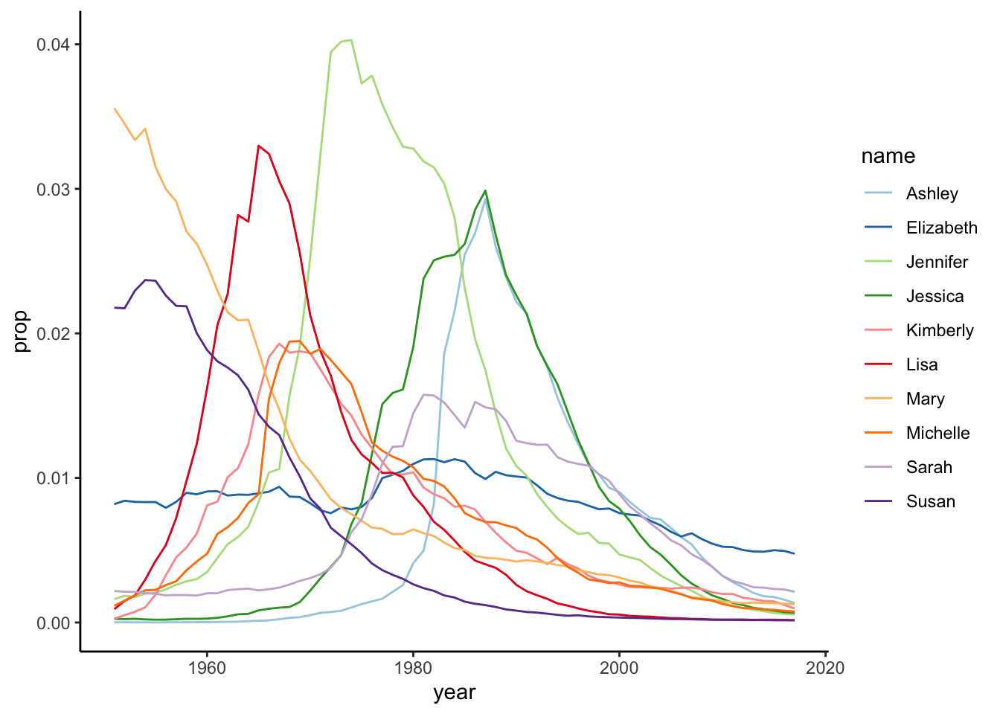

install.packages("renv")
renv::init()
renv::snapshot()analysis
Load libraries
let’s setup renv to lock the project dependencies.
in this section we call all libraries that we will require to run our analysis.
library(babynames)
library(knitr)
library(dplyr)
library(ggplot2)
library(tidyr)
library(pheatmap)Explore the dataset
Check the first 10 babynames of the dataset
head(babynames, 10) |> kable()| year | sex | name | n | prop |
|---|---|---|---|---|
| 1880 | F | Mary | 7065 | 0.0723836 |
| 1880 | F | Anna | 2604 | 0.0266790 |
| 1880 | F | Emma | 2003 | 0.0205215 |
| 1880 | F | Elizabeth | 1939 | 0.0198658 |
| 1880 | F | Minnie | 1746 | 0.0178884 |
| 1880 | F | Margaret | 1578 | 0.0161672 |
| 1880 | F | Ida | 1472 | 0.0150812 |
| 1880 | F | Alice | 1414 | 0.0144870 |
| 1880 | F | Bertha | 1320 | 0.0135239 |
| 1880 | F | Sarah | 1288 | 0.0131961 |
Here, We’ve created two functions that do the following:
get_most_frequent: Gets the most frequent babynames over a time-period.plot_top: from the output ofget_most_frequent. Plot the top n most popular names.
Let’s now use these functions to visualize the plots.
Code
get_most_frequent <- function(babynames, select_sex, from = 1950) {
most_freq <- babynames |>
filter(sex == select_sex, year > from) |>
group_by(name) |>
summarise(average = mean(prop)) |>
arrange(desc(average))
return(list(
babynames = babynames,
most_frequent = most_freq,
sex = select_sex,
from = from))
}
plot_top <- function(x, top = 10) {
topx <- x$most_frequent$name[1:top]
p <- x$babynames |>
filter(name %in% topx, sex == x$sex, year > x$from) |>
ggplot(aes(x = year, y = prop, color = name)) +
geom_line() +
scale_color_brewer(palette = "Paired") +
theme_classic()
return(p)
}Plotting the 10 most frequently names for baby boys üëØ‚Äç‚ôÇÔ∏è
get_most_frequent(babynames, select_sex = "M") |>
plot_top()From the Figure 1 we observe a clear popularity of the name Michael and later other names such as Christopher and Mathew gained more popularity.
Plotting the 10 most frequently names for baby girls ü§∏‚Äç‚ôÄÔ∏è
get_most_frequent(babynames, select_sex = "F") |>
plot_top()

From the Figure 2 we see that
Creating the missign figure
# get most frequent girl names from 2010 onwards
from_year <- 2010
most_freq_girls <- get_most_frequent(babynames, select_sex = "F",
from = from_year)
# plot top 5 girl names
most_freq_girls |>
plot_top(top = 5)
# plot top 10 girl names
most_freq_girls |>
plot_top(top = 10)# get top 30 girl names in a matrix
# with names in rows and years in columns
prop_df <- babynames |>
filter(name %in% most_freq_girls$most_frequent$name[1:30] & sex == "F") |>
filter(year >= from_year) |>
select(year, name, prop) |>
pivot_wider(names_from = year,
values_from = prop)
prop_mat <- as.matrix(prop_df[, 2:ncol(prop_df)])
rownames(prop_mat) <- prop_df$name
# create heatmap
pheatmap(prop_mat, cluster_cols = FALSE, scale = "row")